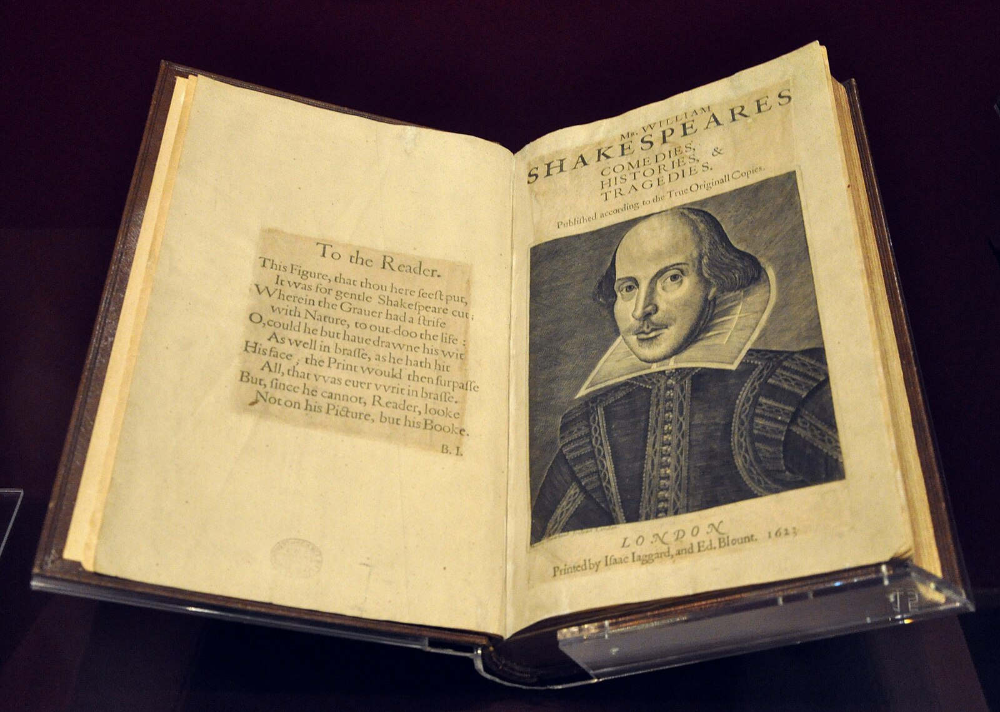

Shakespeare's works
Tragedies, comedies, chronicles, sonnets and poems
Tragedies
Shakespeare's greatest tragedies explore human nature, passion, power, and fate.
Hamlet
1600-1601Prince Hamlet of Denmark avenges the murder of his father, King Hamlet, who was poisoned by his brother Claudius.
Main characters: Hamlet, Claudius, Gertrude, Ophelia
The famous phrase: "To be or not to be, that is the question"
(Быть или не быть, вот в чём вопрос)
Romeo and Juliet
1595-1596The love story of a young man and a girl from two warring Veronese families – the Montagues and the Capulets.
Main characters: Romeo, Juliet, Mercutio, Tybalt
The famous phrase: "What does a name mean? A rose smells like a rose, whether you call it a rose or not."
(Что значит имя? Роза пахнет розой, хоть розой назови ее, хоть нет)
Macbeth
1606Scottish general Macbeth, incited by his ambitious wife, murders the king to seize the throne.
Main characters: Macbeth, Lady Macbeth, Duncan, Banquo
The famous phrase: "Life is a story told by a fool, full of sound and fury, but devoid of meaning."
(Жизнь — это повесть, рассказанная дураком, полная шума и ярости, но лишенная смысла)
Othello
1604The Moor Othello, a general in the Venetian army, falls victim to the intrigues of his subordinate Iago.
Main characters: Othello, Desdemona, Iago, Cassio
Theme: Jealousy, betrayal, racism
King Lear
1606Old King Lear divides his kingdom between two flattering daughters, rejecting the sincere third.
Main characters: King Lear, Cordelia, Goneril, Regan
Theme: Family relationships, madness, old age
Comedies
Shakespeare's comedies are full of wit, love affairs and happy endings.
A Midsummer Night's Dream
1595-1596A twisted love story set in a magical forest on the eve of the summer solstice.
Main characters: Oberon, Titania, Puck, Theseus
Peculiarity: A combination of reality and fantasy
The Taming of the Shrew
1593-1594Petruchio decides to marry the obstinate Katherina and "tames" her character.
Main characters: Petruchio, Katarina, Bianca
Тheme: Gender roles, marriage, parenting
Twelfth Night
1601-1602After a shipwreck, Viola disguises herself as a man and enters the service of Duke Orsino.
Main characters: Viola/Sebastian, Orsino, Olivia
Peculiarity: The theme of dressing up and confusion
Much ado about nothing
1598-1599The story of two couples: Claudio and Hero, and Benedick and Beatrice.
Main characters: Benedick, Beatrice, Claudio, Gero
Theme: Love, deception, wit
Historical chronicles
Plays based on English history that explore power, politics and national identity.
Richard III
1592-1593The story of Richard III, the last Yorkist king, and his rise to the throne through betrayal and murder.
Main characters: Richard III, Queen Margaret, Duke of Buckingham
Famous phrase: "A horse! A horse! Half a kingdom for a horse!"
(Коня! Коня! Полцарства за коня!)
Henry IV
1597-1598King Henry IV fights rebels while his son Prince Hal spends time with Sir John Falstaff.
Main characters: Henry IV, Prince Hal, Falstaff, Hotspur
Peculiarity: A combination of serious story and comic scenes
Henry V
1599Young King Henry V leads the English army to victory over the French at the Battle of Agincourt.
Main characters: Henry V, Catherine, Fluellen
Famous phrase: "Once upon a time on St. Crispin's Day"
"Однажды в день Святого Криспина"
Poetry
Shakespeare's sonnets and poems are masterpieces of love and philosophical lyrics.
Sonnets (1609)
154 sonnets, devoted to themes of love, beauty, politics, and morality. They are divided into two cycles: sonnets 1-126 are addressed to a "fair-haired youth," and sonnets 127-154 to a "dark lady."
Sonnet 18 (fragment):
"Сравню ли с летним днем твои черты?
Но ты милей, умеренней и нежней.
Ломает май случайные цветы,
И срок прекрасный слишком коротей."
Venus and Adonis (Венера и Адонис) (1593)
Shakespeare's first published work, the poem tells the story of the goddess of love, Venus, and her unsuccessful attempts to seduce the young hunter Adonis.
Dishonored Lucretia (Обесчещенная Лукреция) (1594)
A poem about the virtuous Roman woman Lucretia, who was raped by the son of King Tarquinius and committed suicide, which led to an uprising and the establishment of a republic.
First Folio

Первое фолио (First folio) — собрание пьес Уильяма Шекспира, изданное в 1623 году, через семь лет после его смерти. Составлено его друзьями-актерами Джоном Хемингом и Генри Конделом.
В Первое фолио вошли 36 пьес, 18 из которых ранее не публиковались. Без этого издания такие пьесы, как "Макбет", "Буря", "Двенадцатая ночь" и "Юлий Цезарь", могли бы быть потеряны навсегда.
Сегодня сохранилось около 235 экземпляров Первого фолио, каждый из которых оценивается в миллионы долларов.